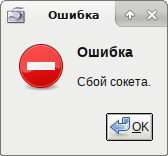

На рабочем компьютере решил обновить Debian с релиза Stretch до Buster и столкнулся с проблемой: при попытке проверить почту Sylpheed на POP3-сервере вылетает окно с ошибкой:
Если попытаться запустить Sylpheed через окно терминала, можно увидеть чёть больше подробностей:
$ sylpheed (sylpheed:7387): LibSylph-WARNING **: 15:42:26.003: SSL_connect() failed with error 1, ret = -1 (error:1425F102:SSL routines:ssl_choose_client_version:unsupported protocol) (sylpheed:7387): LibSylph-WARNING **: 15:42:26.003: can't start TLS session. (sylpheed:7387): LibSylph-WARNING **: 15:42:26.004: [15:42:26] Сбой сокета.
Как видно, POP3-сервер не поддерживает требуемую версию протокола SSL/TLS.
В прошлом мне уже приходилось разбираться с подобной проблемой при отправке уведомлений из Zabbix на сервер Jabber: Пересборка libiksemel для решения проблемы JABBER tls handshake failed в Zabbix. В этот раз я попробовал пойти тем же путём, установил утилиту командной строки gnutls-cli-debug и воспользоваться ей для проверки возможностей Jabber-сервера.
Устанавливаем пакет gnutls-bin:
# apt-get install gnutls-bin
Вызываем утилиту для получения списка возможностей Jabber-сервера:
$ gnutls-cli-debug -p 995 mail.server.ru
Утилита выводит следующую информацию:
GnuTLS debug client 3.6.7
Checking mail.server.ru:995
whether we need to disable TLS 1.2... no
whether we need to disable TLS 1.1... no
whether we need to disable TLS 1.0... no
whether %NO_EXTENSIONS is required... no
whether %COMPAT is required... no
for TLS 1.0 (RFC2246) support... yes
for TLS 1.1 (RFC4346) support... no
fallback from TLS 1.1 to... TLS 1.0
for TLS 1.2 (RFC5246) support... no
for TLS 1.3 (RFC8446) support... no
|<1>| FFDHE groups advertised, but server didn't support it; falling back to server's choice
TLS1.2 neg fallback from TLS 1.6 to... TLS1.0
for HTTPS server name... unknown
for certificate chain order... sorted
for safe renegotiation (RFC5746) support... yes
for encrypt-then-MAC (RFC7366) support... no
for ext master secret (RFC7627) support... no
for heartbeat (RFC6520) support... no
for version rollback bug in RSA PMS... no
for version rollback bug in Client Hello... no
whether the server ignores the RSA PMS version... no
whether small records (512 bytes) are tolerated on handshake... yes
whether cipher suites not in SSL 3.0 spec are accepted... yes
whether a bogus TLS record version in the client hello is accepted... yes
whether the server understands TLS closure alerts... yes
whether the server supports session resumption... no
for anonymous authentication support... no
|<1>| FFDHE groups advertised, but server didn't support it; falling back to server's choice
for ephemeral Diffie-Hellman support... yes
|<1>| FFDHE groups advertised, but server didn't support it; falling back to server's choice
for RFC7919 Diffie-Hellman support... no
for ephemeral EC Diffie-Hellman support... no
for curve SECP256r1 (RFC4492)... no
for curve SECP384r1 (RFC4492)... no
for curve SECP521r1 (RFC4492)... no
for curve X25519 (RFC8422)... no
for AES-GCM cipher (RFC5288) support... no
for AES-CCM cipher (RFC6655) support... no
for AES-CCM-8 cipher (RFC6655) support... no
for AES-CBC cipher (RFC3268) support... yes
for CAMELLIA-GCM cipher (RFC6367) support... no
for CAMELLIA-CBC cipher (RFC5932) support... yes
for 3DES-CBC cipher (RFC2246) support... yes
for ARCFOUR 128 cipher (RFC2246) support... yes
for CHACHA20-POLY1305 cipher (RFC7905) support... no
for MD5 MAC support... yes
for SHA1 MAC support... yes
for SHA256 MAC support... no
for max record size (RFC6066) support... no
for OCSP status response (RFC6066) support... no
Сервер POP3 не поддерживает новейшие версии протокола TLS1.2 и TLS1.1, но поддерживает TLS1.0. Видимо почтовый клиент пытается использовать более безопасную версию протокола и не соглашается на TLS1.0.
Решение проблемы несколько затянулось, т.к. первоначально я пошёл по ложному следу. Попробовал удалить сначала пакет openssl, а потом libgnutls30. Пакет sylpheed попадал в список удаляемых пакетов лишь во втором случае. На самом деле sylpheed зависел не от библиотеки libgnutls30, а от библиотеки libssl1.1. Для изменения настроек OpenSSL, которые используются по умолчанию, оказалось достаточно поправить файл /etc/ssl/openssl.cnf.
В файле были прописаны такие настройки:
[system_default_sect] MinProtocol = TLSv1.2 CipherString = DEFAULT@SECLEVEL=2
Для того, чтобы sylpheed успешно подключился к почтовому серверу, оказалось достаточно поменять минимальный требуемый протокол, вот так:
[system_default_sect] MinProtocol = TLSv1.0 CipherString = DEFAULT@SECLEVEL=2